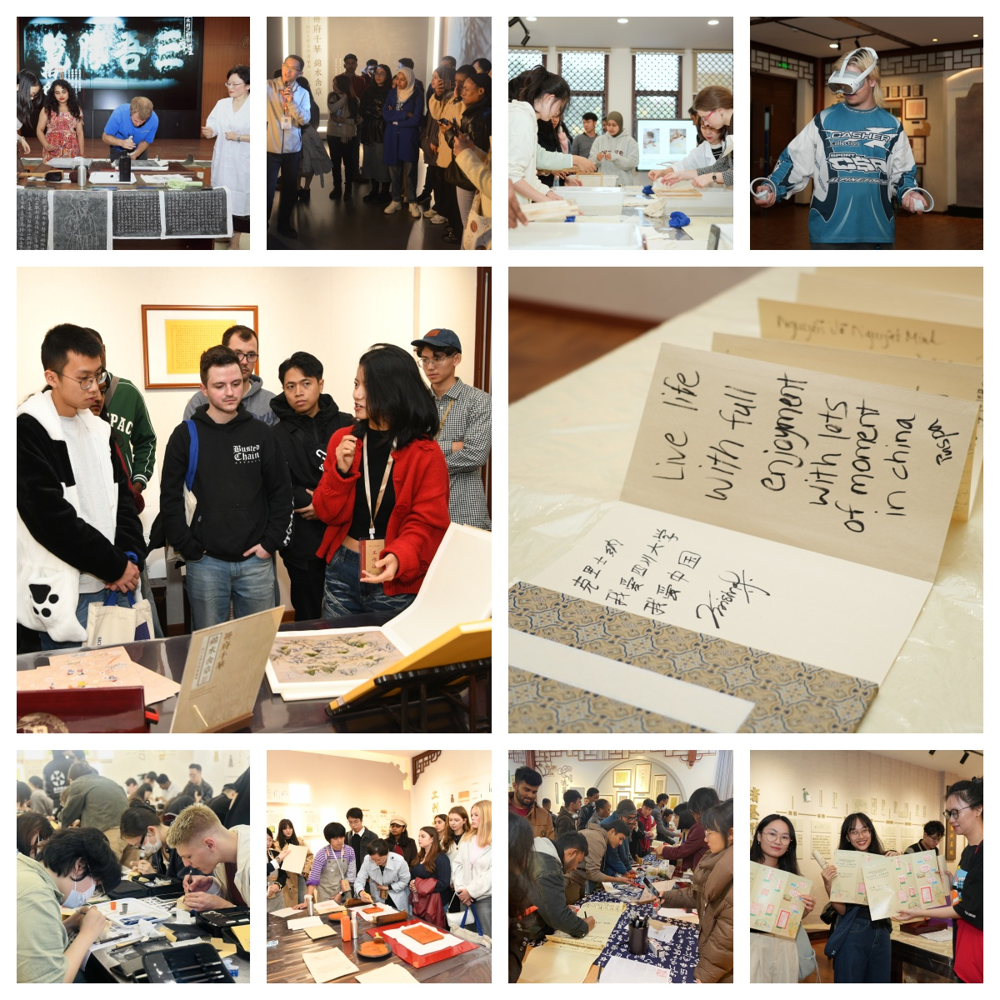

学院通知 · 校园活动
四川大学图书馆面向来华留学生的古籍活化项目入选省级、国家级阅读推广展示名单
发布时间：2026-06-16 16:12:41
近日，四川省图书馆学会、中国图书馆学会先后公布2024—2025年全民阅读工作有关名单。四川大学图书馆申报的“古籍活化‘三驱协同’，点亮来华留学生中华文化阅读之光”项目，入选“四川省图书馆学会2024—2025年阅读推广展示项目名单”和“中国图书馆学会2024—2025年阅读推广项目展示名单”。 本次评选面向全民阅读领域优秀实践项目，重点遴选理念新颖、内容专业、特色鲜明、成效突出、具有行业借鉴价值和示范推广意义的项目。据悉，四川省图书馆学会共遴选9家单位10个项目并择优推荐至中国图书馆学会；经全国范围评审，22个项目入选中国图书馆学会展示名单。四川大学图书馆项目先后入选省级、国家级展示名单，体现了学校图书馆在古籍活化、阅读推广和中华优秀传统文化国际传播方面的探索成效。 近年来，四川大学图书馆依托“全国古籍重点保护单位”和国家级古籍修复中心建设基础，围绕学校国际学生培养和书香校园建设需求，将馆藏古籍资源、修复技艺体验、典籍阅读导读和跨文化交流相结合，持续推进面向来华留学生的古籍活化实践。图书馆把古籍从“馆藏资源”转化为“可阅读、可体验、可交流”的文化育人资源，先后 审获 “四川大学来华留学生典籍文化与古籍技艺工作坊”“留传经典·蜀韵川大” 等 特色 项目 ，引导国际学生在阅读、观摩、体验和交流中感知中华典籍之美、巴蜀文化之韵和川大文脉之厚。 在项目实施过程中，四川大学图书馆形成了“受众驱动、人才驱动、研究驱动”三驱协同工作机制。坚持受众驱动，围绕国际学生语言背景、文化基础和学习需求，设计双语导读、古籍修复体验、传统装帧展示、蜀地文献讲解等沉浸式环节，提升阅读推广的参与度和亲和力；坚持人才驱动，组建馆员、专业教师、学生志愿者共同参与的双语服务队伍，在项目实施中提升青年学生跨文化沟通和文化传播能力；坚持研究驱动，将活动策划、过程反馈和效果评估贯通起来，推动阅读推广由单次活动向机制化、品牌化项目转化。 自2023年开展以来，项目已累计服务来自75个国家的500余名留学生，逐步形成以古籍资源活化为基础、以阅读体验为路径、以文化交流为延伸的特色阅读推广品牌。项目把图书馆专业优势、学校国际化人才培养和中华优秀传统文化传播有机结合，为高校图书馆开展涉外阅读推广、推动古籍保护利用与文化育人深度融合提供了可借鉴的实践样本。 此次入选省级、国家级阅读推广展示名单，是对四川大学图书馆相关工作的肯定。下一步，四川大学图书馆将继续发挥古籍资源、专业队伍和文化空间优势，持续完善面向中外学生的阅读推广体系，丰富典籍阅读与文化体验形式，推动古籍活化成果更好服务人才培养、文化传承与中外文明交流互鉴。 文： 华礼娴
